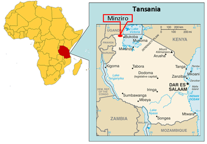

Über Minziro
Minziro ist ein Dorf Nordwest vom Tansania. Es ist ca. 120 qkm groß und hat ca. 10 000 Einwohner.

Die Haupteinnahmequellen sind die Anbauprodukte Kaffee, Bananen, Bananenbier und Tomaten.
Das durchschnittliche Jahreseinkommen pro Familie beträgt ca. 500€.
Minziro ist von einem 6,4 km breiten und dichten Urwald eingeschlossen und schwer zugänglich.
Es gibt weder Strom noch fließendes Wasser und auch kein Krankenhaus.
Mittlerweile ist der Urwald Minziros ein attraktives Naturschutzgebiet mit schönen Schmetterlingen,
Vögeln, Bäumen u.w.m. (siehe: http://www.nature-reserves.go.tz/fnr/minziro
oder https://en.wikipedia.org/wiki/Minziro_Forest_Reserve).
Social-Media
Folge uns auf Facebook, Twitter und Co. um mehr über unsere Arbeit zu erfahren!